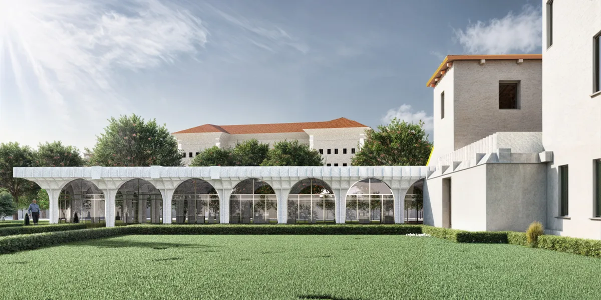
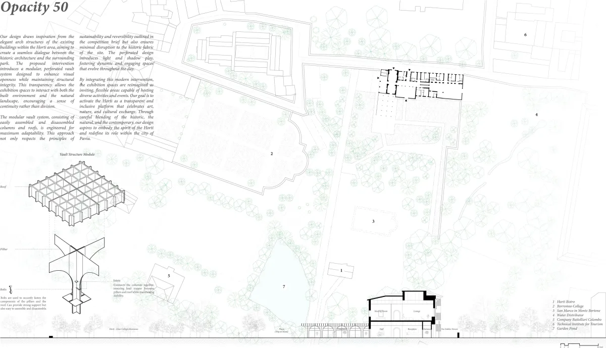
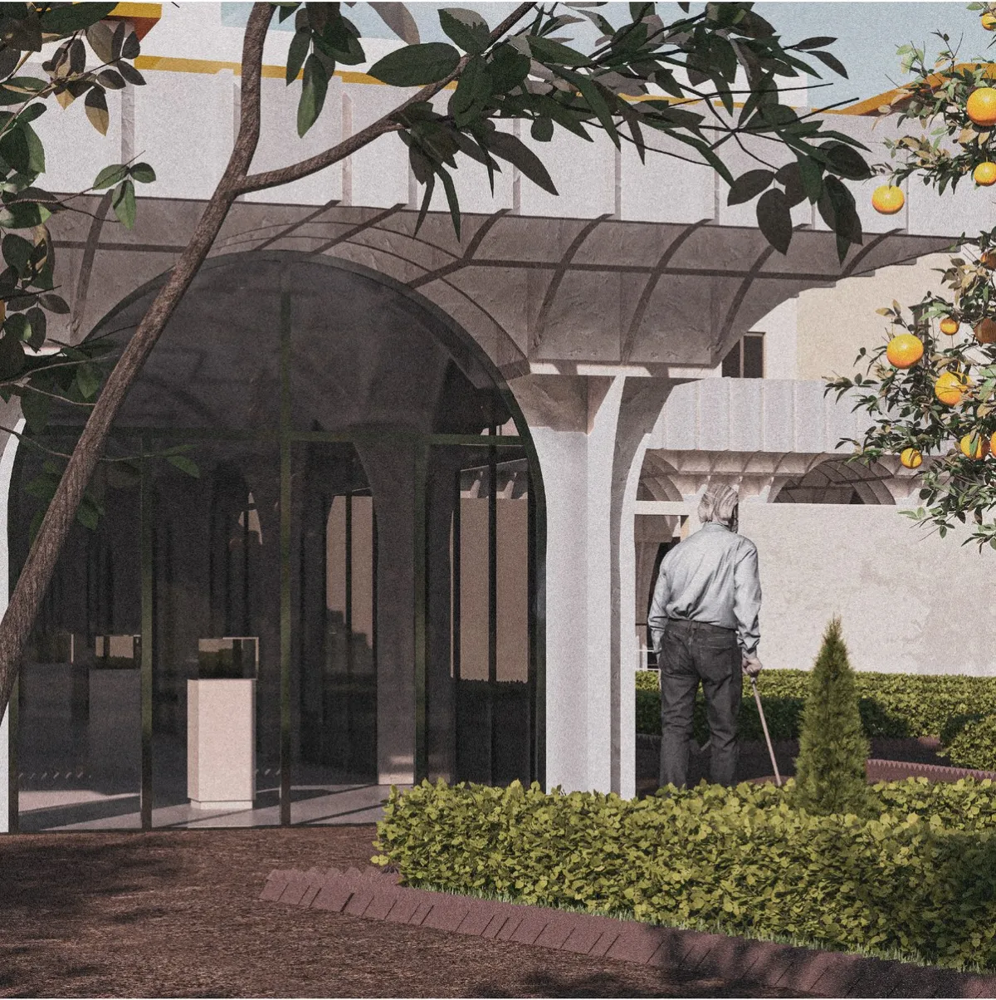
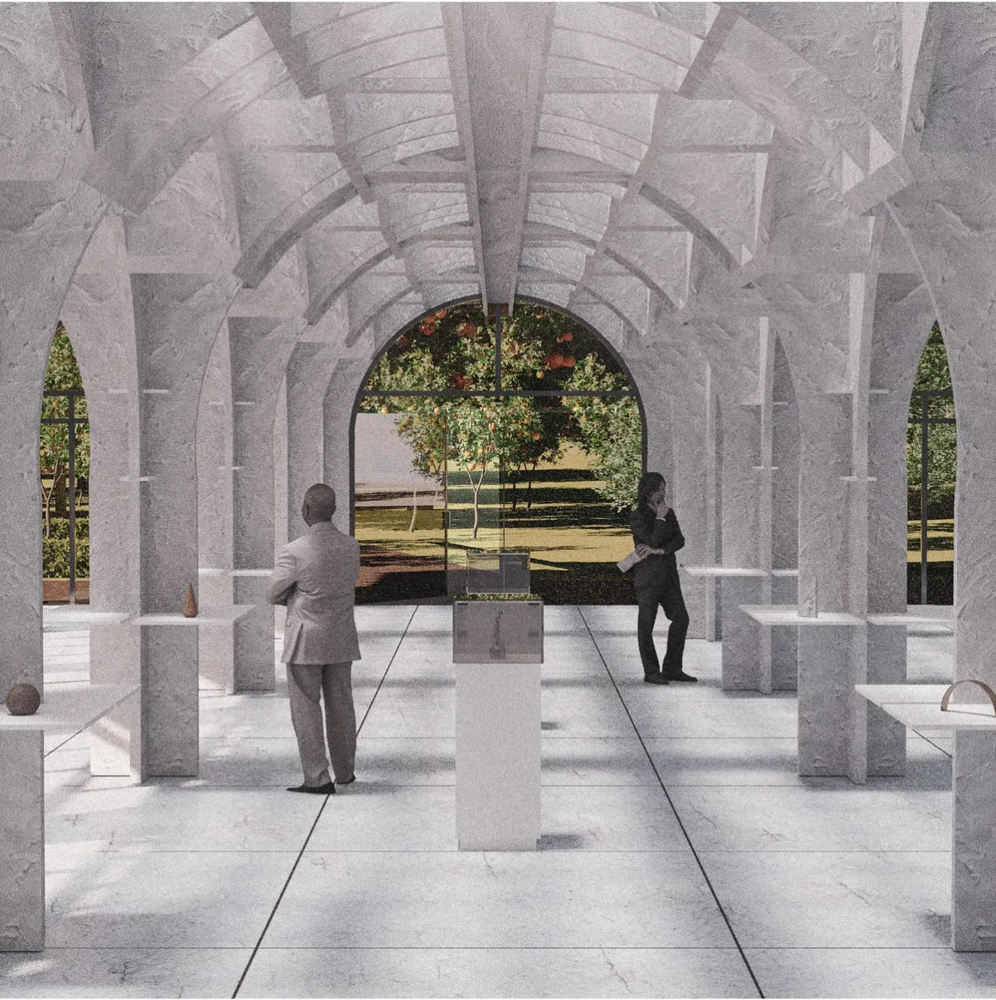
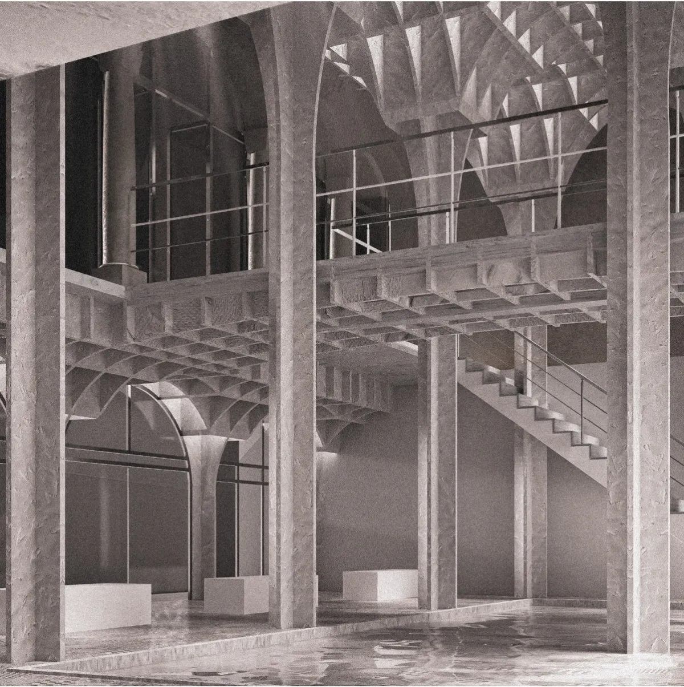
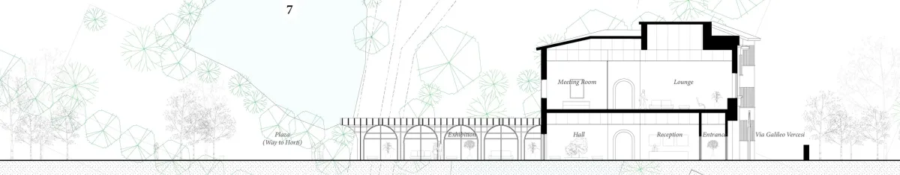

Opacity 50
파비아 Almo Collegio Borromeo 정원 전시 공간
Garden of Knowledge Competition, Almo Collegio Borromeo, Pavia
옛 건물의 아치를 따른 모듈형 타공 볼트로, 정원을 가르지 않고 이어 가는 전시 공간을 만든다.

파비아 Almo Collegio Borromeo의 정원 Horti에 현대 건축과 장소의 역사를 잇는 공공 공간을 짓는 YAC 공모다.
볼트는 기둥, 지붕, 체결 볼트로 된 키트라 세우고 거두기 쉽고, 역사 건물을 거의 건드리지 않는다. 타공 지붕이 하루 동안 빛과 그림자를 바꾼다.
Vault Module, Site Plan and Section

Three Views



Section
